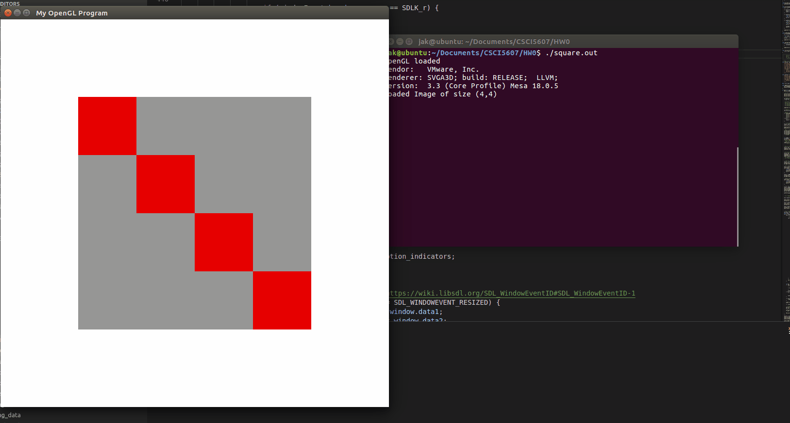
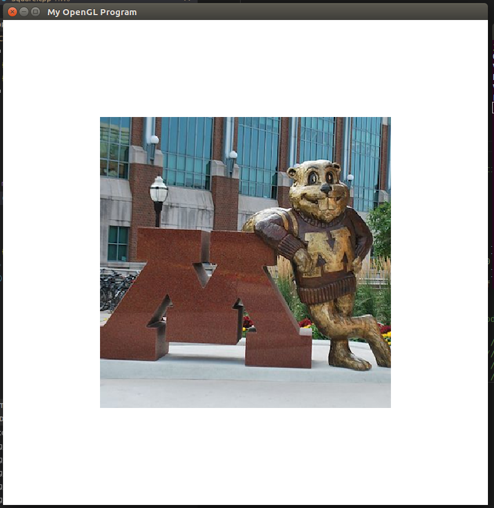

Jackson Kruger
The following gifs demonstrate the functionality of my implementation of a square renderer. If they take too long to load, the individual gifs can be opened in their own tabs. I initially tried setting up my development in Windows, but quickly decided that wasn't worth the pain. After switching over to my Ubuntu VM, I had no trouble with the libraries at all, and compilation was straightforward.
The biggest difficulty encountered was determining why the images loaded in upside-down. After much debugging, I learned that it was just due to how OpenGL interprets images. Everything else was reasonably straightforward to implement.
The source code can be found on GitHub. Square.cpp
Basic required features - translation, scaling, and rotation (and loading test.ppm):

Demonstration of brightening and darkening (in response to +/- key presses):

Graphical indicators of what motion is being performed:

Animation independent of user input (after toggle button):

Maintaining the square's shape (and behavior) when aspect ratio changes:
Different loaded image (goldy.ppm):
A compiled executable for Ubuntu can be found here: square.out
Keybindings:
The views and opinions expressed in this page are strictly those of the page author.
The contents of this page have not been reviewed or approved by the University of Minnesota.